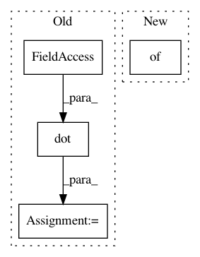

4ca74616a886c24dd7946e00f535f323e2e13787,astroML/linear_model/linear_regression.py,LinearRegression,fit,#LinearRegression#Any#Any#Any#,38
Before Change
X_fit, y_fit = self._process_Xy(self.X_, self.y_, dy)
self.coef_ = np.linalg.solve(np.dot(X_fit.T, X_fit),
np.dot(X_fit.T, y_fit))
return self
def predict(self, X):
return np.dot(self._process_X(X), self.coef_)
After Change
return model
def fit(self, X, y, y_error=1):
kwds = {}
if self.kwds is not None:
kwds.update(self.kwds)
kwds["fit_intercept"] = False
In pattern: SUPERPATTERN
Frequency: 3
Non-data size: 4
Instances
Project Name: astroML/astroML
Commit Name: 4ca74616a886c24dd7946e00f535f323e2e13787
Time: 2014-10-22
Author: jakevdp@gmail.com
File Name: astroML/linear_model/linear_regression.py
Class Name: LinearRegression
Method Name: fit
Project Name: SPFlow/SPFlow
Commit Name: 178553d4d4edfdc155d876c5ac75aaa1105445ee
Time: 2018-08-15
Author: molina@cs.tu-darmstadt.de
File Name: src/spn/structure/leaves/conditional/utils.py
Class Name:
Method Name: get_scipy_obj_params
Project Name: SPFlow/SPFlow
Commit Name: c52045a02486d7c3793b1083f5b281a1e5fdb4fb
Time: 2018-09-11
Author: molina@cs.tu-darmstadt.de
File Name: src/spn/structure/leaves/conditional/utils.py
Class Name:
Method Name: get_scipy_obj_params